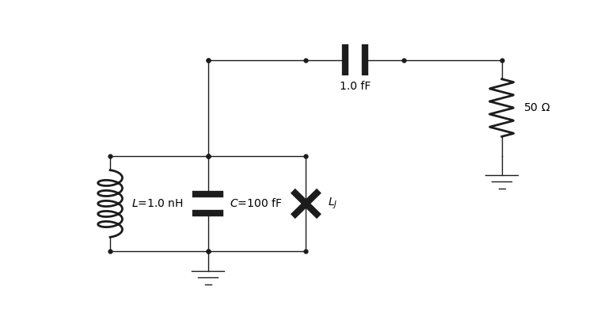

Graphical user interface
- class qucat.GUI(filename, edit=True, plot=True, print_network=True)[source]
Opens a graphical user interface to constructs a circuit.
- Parameters:
filename (string) – Path to a file which will store all the information about the graphically constructed circuit.
edit (Boolean) – If True (default), the graphical user interface will be opened. One can set this argument to False to import the circuit without opening the graphical user interface
plot (Boolean) – If True (default), the circuit will be plotted using matplotlib.
print_network (Boolean) – If True (default), a text description of the constructed network will be printed.
- Returns:
A Qcircuit object, see qucat.Qcircuit
- Return type:
qucat.Qcircuit
Notes
All the necessary information about the circuit generated by the graphical user interface application is stored in a human-readable format at the specified path.
Each line of this text file is in the format:
type;x_minus,y_minus;x_plus,y_plus;value;labeland represents a circuit component, wire or ground element.
typecan take the valuesL,C,R,J,WorGfor inductor, capacitor, resistor, junction, wire or ground respectively.valuewill be a float representing the value of the component or will be emptylabelwill be a string corresponding to the label of the component or will be emptyx/y_minus(x/y_plus) represents the horizontal/vertical location of the minus (plus) node of the component. Negative value are allowed and components have a length of 1 unit.For example, the circuit below, is described by the following text file
L;3,-10;3,-11;1.000000e-09;L C;4,-10;4,-11;1.000000e-13;C J;5,-10;5,-11;;L_J C;5,-12;6,-12;1.000000e-15; R;7,-11;7,-12;5.000000e+01; G;7,-10;7,-11;;